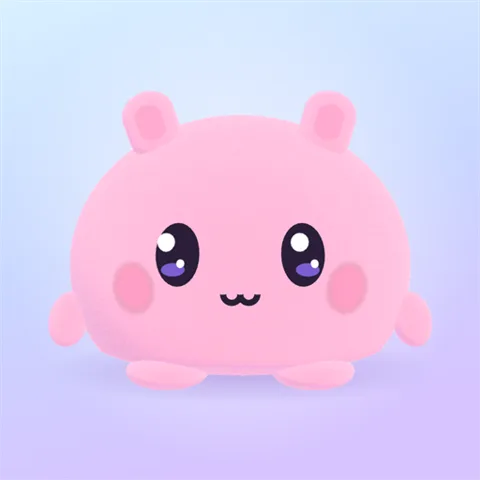
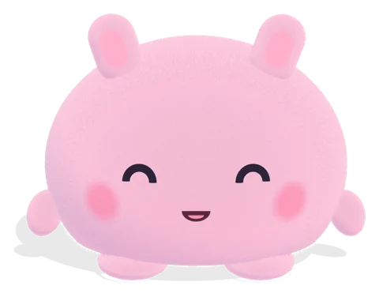
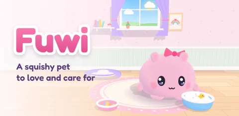
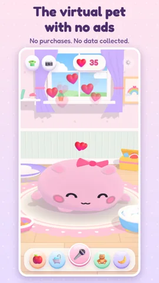
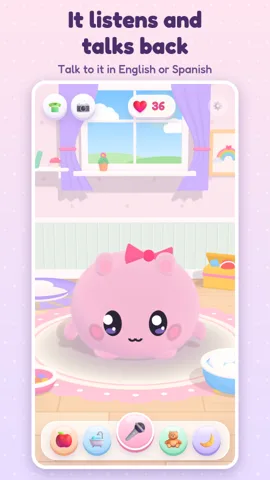
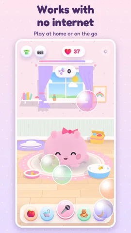
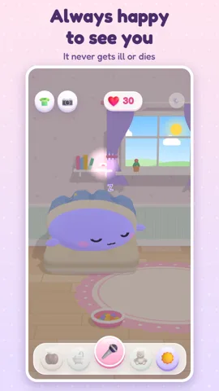

Press kit
Everything you need to write about Fuwi: what it is, the facts and the images. You are welcome to use them in articles about Fuwi.
Fuwi in a nutshell
Fuwi is a 3D virtual pet for children aged 3 to 8: a mochi, a soft, squishy creature that hatches from an egg. Children feed it, bathe it, play with it and at night put it to bed on its cushion under its duvet.
What sets it apart is that it listens: children talk to it in English or Spanish and it answers in its little voice. Speech is understood on the device itself and is never recorded or sent anywhere. It has no ads or purchases, works offline with almost no text, and never gets ill or dies.
Facts
- Price
- Free, with no ads and no purchases
- Platform
- Android 7.0 or later, phones and tablets
- Languages
- English and Spanish
- Age
- 3 to 8 years old
- Privacy
- No data collected. Speech is processed on the device. Privacy policy
- Developer
- Akrogs Labs
- Google Play
- Fuwi on Google Play
- Contact
- akrogslabs@outlook.com
Images
Icon and character
-

App icon Download PNG · 512×512 -

Fuwi, transparent background Download PNG · 1121×877 -
 Fuwi in its six colours
Download PNG · 1080×1080
Fuwi in its six colours
Download PNG · 1080×1080
-

Google Play feature graphic Download PNG · 1024×500


Screenshots
-

Stroke it and it closes its eyes Download PNG · 1080×1920 -

It listens and talks back Download PNG · 1080×1920 -

It plays at popping bubbles Download PNG · 1080×1920 -

It sleeps on its cushion under a duvet Download PNG · 1080×1920